Heaven is Round, Earth is Square: HRES — System Wiki
Game systems reference
🎮 Game Overview
Heaven is Round, Earth is Square (HRES) is a free, open lightweight online game. Players explore, survive, and collaborate in a vast, persistent world, forming economies and societies and building a virtual civilization together.
Core Features
- Large, continuous world on a single server—no instances; everyone shares one persistent world
- Real economic simulation with no system intervention: trade and industry are driven by the market
- Towns, nations, and other groups are created and run by players, not the system
- Minimal rules: the system provides a light framework; order and institutions emerge from players
🌍 World & Time
World
The HRES world is a continuous, vast flat virtual world—terrain, resources, players, buildings, industry, towns, and nations in one ecosystem. Players explore, build, and collaborate, from individual life to collective civilization.
Terrain
The world has diverse terrain: ocean, continent, islands, lakes, rivers, mountains, etc.
On land there are ground types: grass, sand, snow, mud, rock, wetland, etc. Each affects movement speed, resources, and development. Plan exploration and construction accordingly.
Chunks
The world is divided into chunks; each has an area of 4096 m². The concept comes from the Chinese “heaven is round, earth is square” view of the world. Each chunk is the unit for territory, building, and resources.
Time System
The game uses a unique calendar:
- Time flow: 1 game day = 12 real hours (2× real time)
- Calendar:
- 1 year = 4 months (Spring, Summer, Autumn, Winter)
- 1 month = 30 days
- Display: "Tianyuan Era Year-Month-Day HH:MM"
Daily Cycle
Settlement uses the calendar day. At the end of each day the system updates and resets:
- Stamina: Players who rest in a house recover full stamina at day’s end
- Work slots: Industry work counts reset daily; players can work again
- Other: All day-based mechanics are processed at day’s end
⛏️ Resources & Gathering
Resource Distribution
Natural resources in the world include:
- Trees
- Stone
- Iron ore
- Copper ore
Resource Reference
| Image | Resource | Item | Gathers | Base stamina | Skill | Tools |
|---|---|---|---|---|---|---|
|
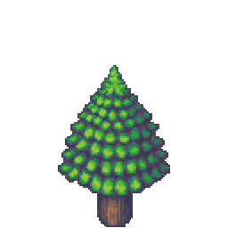 |
松树（大）
|
木材
|
8次
|
75
|
伐木
|
石斧、铁斧
|
|
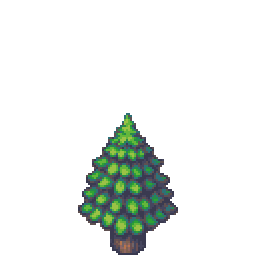 |
松树（中）
|
木材
|
5次
|
60
|
伐木
|
石斧、铁斧
|
|
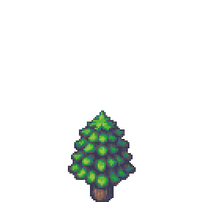 |
松树（小）
|
木材
|
3次
|
40
|
伐木
|
石斧、铁斧
|
|
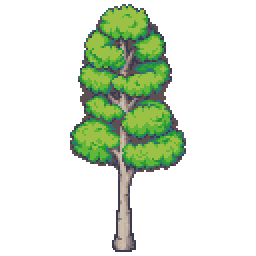 |
桦树（大）
|
木材
|
8次
|
75
|
伐木
|
石斧、铁斧
|
|
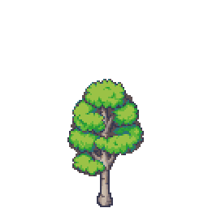 |
桦树（中）
|
木材
|
5次
|
60
|
伐木
|
石斧、铁斧
|
|
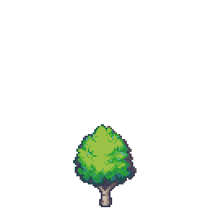 |
桦树（小）
|
木材
|
3次
|
40
|
伐木
|
石斧、铁斧
|
|
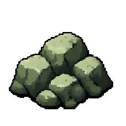 |
石头
|
石头
|
8次
|
50
|
石料采集
|
石镐、铁镐
|
|
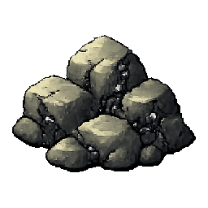 |
铁矿
|
铁矿石
|
12次
|
100
|
铁矿采集
|
石镐、铁镐
|
|
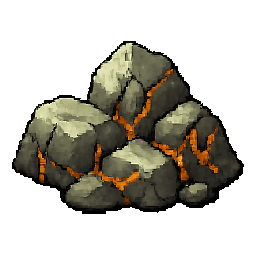 |
铜矿
|
铜矿石
|
12次
|
100
|
铜矿采集
|
石镐、铁镐
|
Resource Rules
- Distribution is influenced by terrain; random but uneven
- Resources regenerate: trees on a shorter cycle, ores on a longer one
Gathering
- Approach a resource; it highlights on hover; click to open the gathering UI
- Spend stamina to gather and receive the corresponding output
- Town residents can gather in town territory; non-residents follow town policy
🏭 Industry & Production
Industry Types
Two types:
Production
Materials → player labor → products
Example: Blacksmith uses ore → makes tools
Service
Provide services → earn income
Example: Inn, shop
Work
- Players spend stamina to work and get paid immediately
- Output goes to the industry’s storage
- Industry size sets daily work slots; owner can set minimum stamina per work
Building Limit
Industry buildings can only be built in chunks within town territory.
🏗️ Building System
Buildings fall into three categories: industry, public, and infrastructure.
🏭 Industry Buildings
Industry (Estate) buildings include production and service types and are the core of the economy. Production buildings offer jobs; players work for pay.
| Image | Building | Description | Materials | Input/Output |
|---|---|---|---|---|
|
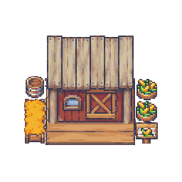 |
Corn Farm |
Production. Grows and harvests corn for food. Offers jobs. |
|
Input: none Output: Corn |
|
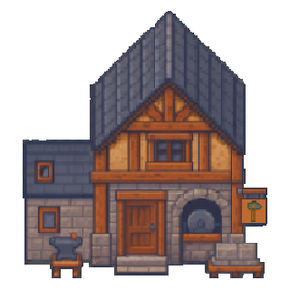 |
Stonemason |
Production. Makes stone tools (axe, pick, hammer). Offers jobs. |
|
Input: Wood, Stone Output: Stone axe, pick, hammer |
|
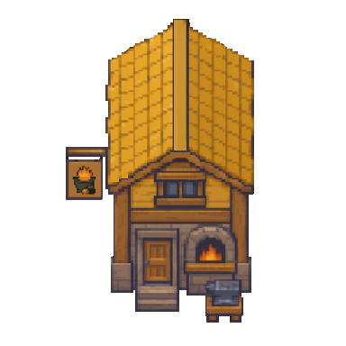 |
Smeltery |
Production. Smelts iron/copper ore into ingots. Offers jobs. |
|
Input: Iron ore, Copper ore Output: Iron ingot, Copper ingot |
|
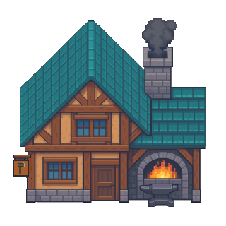 |
Blacksmith |
Production. Makes iron tools (axe, hammer, pick). Offers jobs. |
|
Input: Wood, Iron ingot Output: Iron axe, hammer, pick |
|
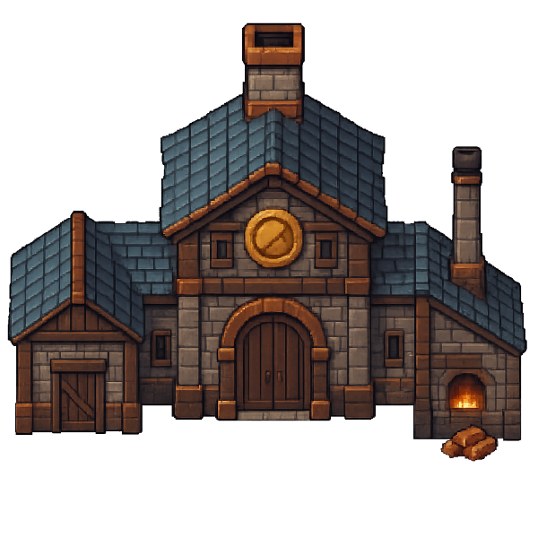 |
Mint |
Production. Mints copper coins. Offers jobs. |
|
Input: Wood, Copper ingot Output: Copper coin |
|
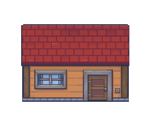 |
House |
Service. Residence for living or rent. Various sizes. No jobs. |
|
Function: Residence |
|
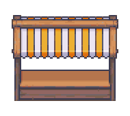 |
Shop |
Service. For owner to sell goods on a small scale. No jobs. |
|
Function: Retail |
|
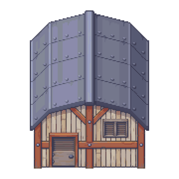 |
Storehouse |
Service. Stores items and resources. No jobs. |
|
Function: Storage |
🏛️ Public Buildings
Public buildings provide town services and management.
| Image | Building | Description | Materials | Effect |
|---|---|---|---|---|
|
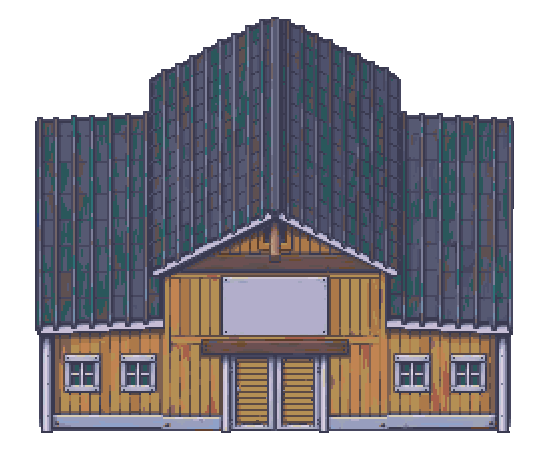 |
Town Center |
Town core. Manage town, set policy, assign roles. Claims 9 chunks. Upgrades to City Center at 50 pop. |
|
Function: Town management, claim territory |
|
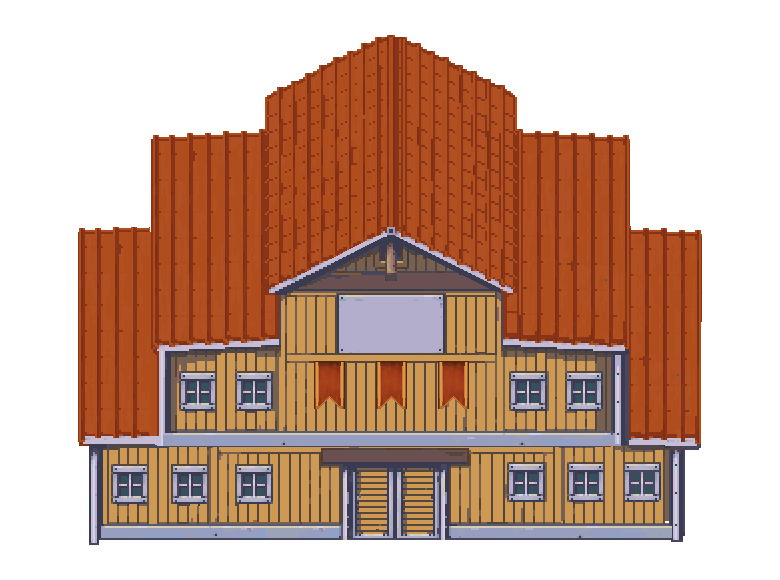 |
City Center |
City core. Upgraded from Town Center. Advanced management. Claims 9 chunks. Cannot build directly. |
|
Function: City management, claim territory |
Market |
Public. Large-scale trading for residents. Center of commerce. |
|
Function: Trading platform |
|
|
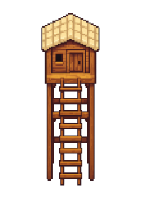 |
Outpost |
Expands town territory. Requires regular maintenance. |
|
Function: Claim territory |
🛤️ Infrastructure
Infrastructure (roads, bridges) is not yet available.
| Image | Building | Description | Materials | Effect |
|---|---|---|---|---|
Dirt road |
Basic road. Not yet available. |
|
Function: Movement speed |
|
Stone road |
Advanced road. Not yet available. |
|
Function: Movement speed |
|
Wood bridge |
Basic bridge. Not yet available. |
|
Function: Crossing |
|
Stone bridge |
Advanced bridge. Not yet available. |
|
Function: Crossing |
🏘️ Town System
Town Tiers
Two tiers:
Town
- Smaller settlement with a Town Center
- Optional name suffixes (e.g. Town, Village)
City
- At 50 population, upgrade Town Center to City Center; town becomes a city
- Optional name suffixes (e.g. City, Capital)
Management
- Lord can grant residents custom titles and roles (e.g. Guard, Chief Architect).
- Towns are the core for residence, companies, and industry; residents pay town taxes.
- Towns can set immigration policy for outsiders.
👑 Nation System
Government Types
👑 Monarchy
- Leader is the founding player; succession by abdication to a chosen successor
- No term limit
- Leader has full decision-making power
🏛 Republic (Not Yet Available)
- Citizens elect representatives who vote for the head of state
- Limited term (1 or 2 months in-game)
- Leader handles routine decisions; major decisions require parliament
- Requirement: at least 1 city
State Style & Ruler Title
Town count, tier, and population determine state style and ruler title. Style can change through reform. The style appears as a suffix (e.g. Khanate, Republic).
Monarchy styles
| Style | Towns | Population | Ruler title |
|---|---|---|---|
| Tribe | 1 town | 1 | Chief |
| Stronghold | 1 town | 1 | Chief |
| Tribal confederation | 2 towns | 50 | Chief / High Chief |
| Khanate | 3 towns | 100 | Khan |
| Duchy / Principality | 1 city | 50 | Duke / Prince |
| Kingdom | 3 cities | 150 | King |
| Empire | 5 cities | 250 | Emperor |
Republic styles
| Style | Cities | Population | Ruler title |
|---|---|---|---|
| City-state | 1 city | 1 | Consul |
| Republic | 2 cities | 50 | President |
| Federation | 5 cities | 150 | President |
Founding a Nation
When a player builds the first Town Center in unclaimed land, the system automatically creates a monarchy.
The settlement is a town; the player can choose from two initial styles:
| Style | Requirement | Ruler title |
|---|---|---|
| Tribe | 1 town + 1 pop | Chief |
| Stronghold | 1 town + 1 pop | Chief |
Government Reform
At a certain size, players can change government:
- Monarchy → Republic: at least 1 city; initiated by the leader (not yet available).
- Republic → Monarchy: triggered by unrest/coup or parliament vote (not yet available).
🗺️ Territory System
Chunks
In the beta, the world is 200 × 100 chunks; each chunk is 4096 m². Each chunk is the unit for territory, building, and resources.
Base Territory
- Town/City center automatically claims the surrounding ring (9 chunks)
- This is the town’s base territory; no extra building required
- Centers cannot be built next to another town’s territory (conflict)
Expansion
- Use expansion buildings to claim adjacent territory
- Expansion buildings have a “range” and can claim multiple chunks
- Ranges can overlap for efficiency
- New territory must be adjacent to existing territory
Expansion Buildings
Town / City Center
- Role: Core building; base territory expansion
- Range: Its chunk plus 8 adjacent (9 chunks total)
Outpost
- Role: Territory expansion
- Range: Its chunk only (1)
Who Can Build
- Town/City center: Anyone can build in unclaimed land; builder pays
- Outpost: Any town resident can build; builder pays; claimed territory goes to the town
- No permit needed; basic conditions must be met
Town Expansion Subsidy
Lord can set:
- Build subsidy: Financial support for building outposts
- Maintenance subsidy: Partial support for outpost maintenance
Territory Effects
- Industry: Industry buildings only in town territory
- Gathering: Residents can gather in town territory; non-residents follow town policy
Territory Conflict
- Not yet available
🏢 Company System (Not Yet Available)
Forming a Company
Players can form companies to manage multiple industries.
Ownership & Income
- A company can be owned by one player or multiple shareholders.
- Output belongs to the company; shareholders share profits.
📚 World Wiki
World Wiki is HRES’s player-built knowledge base—like a wiki for this virtual world. Every player can edit: create, edit, and improve entries and write the world’s encyclopedia together.
What is World Wiki?
A player-driven knowledge base for player-created content: nations, towns, companies, historical events, and players who left their mark. Each entry is part of the world’s shared history.
Features
Free Editing
Any player can create, edit, and improve entries.
Player Content
Entries are about what players create in-game: nations, towns, companies, events—real stories from the world.
Collaboration
Multiple players can work on the same entry for a fuller, more accurate record.
What You Can Do
- Create entries: Document your nation or town—founding, growth, key events, history
- Edit and improve: Collaborate with others, fill gaps, fix errors
- Explore: Read other players’ content and stories
- Witness history: A living, player-written history of the world
Entry Types
Supported types:
- Nation: founding, government, style, key events
- Town: founding, development, buildings, population, events
- Company: founding, business, shareholders, events
- Historical event: founding, wars, major trades, etc.
- Player: players and their contributions